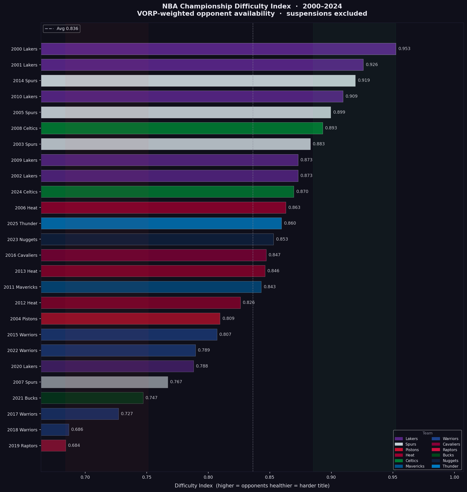

Dashboards, Extensions, and Data Projects
Recent browser extensions and basketball dashboards first, followed by earlier portfolio work.
Connor Ashley
Python, SQL, Excel, Tableau, and AI tools.
Recent browser extensions and basketball dashboards first, followed by earlier portfolio work.
Published browser tools with live store pages and product-focused UX.
Chrome extension for sorting your Steam library with smart recommendations, search, filters, and detailed game previews.
Chrome extension for routing audio into left or right channels to fix uneven playback and support split listening.
Interactive basketball analysis projects grouped together, with the older streaks project listed last.

Interactive dashboard ranking NBA championship paths using playoff injury context and season-long contender injury loss.

Interactive dashboard exploring teammate shooting impact with on/off splits and adjusted WOWY metrics from NBA play-by-play data.
Using Python to scrape data from multiple pages, cleaning data in Excel, and building a Tableau-ready basketball analysis.
Core SQL and Tableau portfolio work that rounds out the project collection.
Cleaning housing data in SQL Server and preparing the dataset for more reliable downstream analysis.

Data exploration of a Covid-19 dataset in SQL Server to surface trends, comparisons, and summary metrics.
Visualizing various datasets in Tableau with dashboards designed for clear storytelling and exploratory analysis.